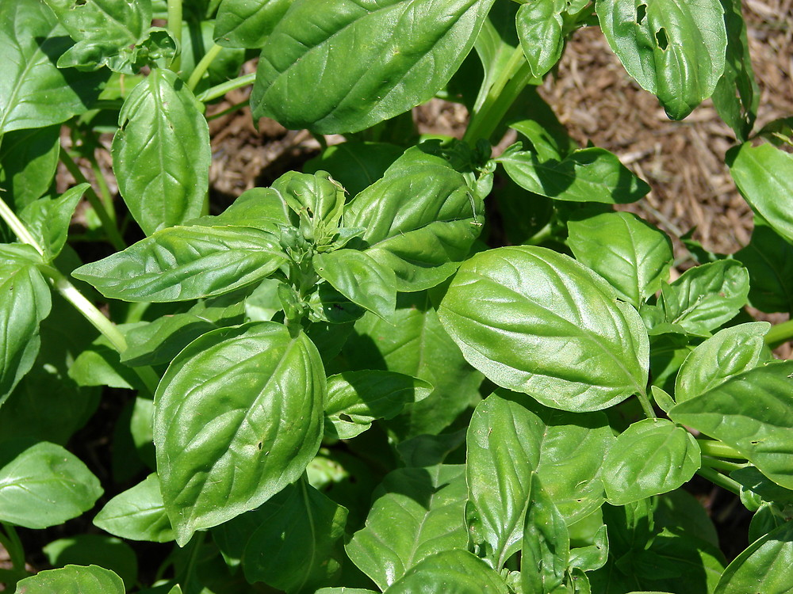
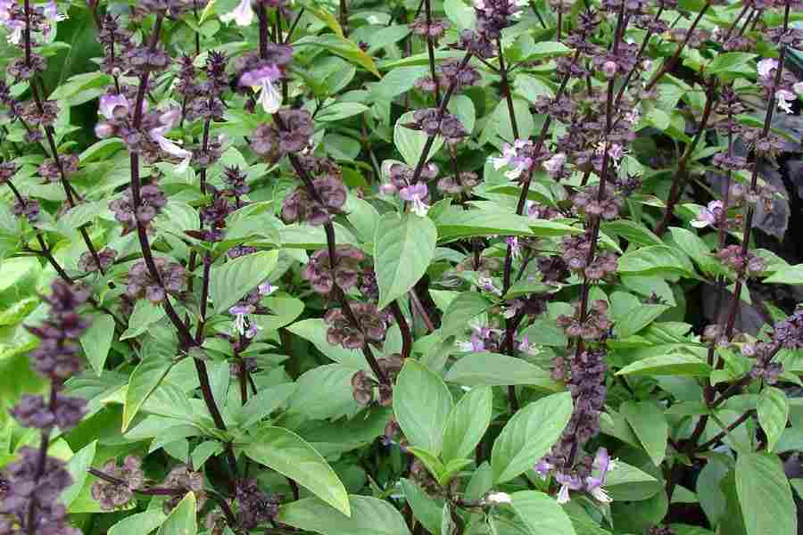

Upload a Photo to Identify a Plant
Not sure what plant you're looking at? Simply upload a clear photo of the leaf, flower, or the whole plant, and here will match it against our reference database to suggest the most likely species.
Plant Information
Plant identification can help users learn more about unfamiliar plants by connecting their appearance with useful botanical information. An identified plant may have both a common name and a scientific name, allowing users to understand how it is classified. For example, basil is commonly known as Basil, while its scientific name is Ocimum basilicum. Learning the scientific name can make it easier to distinguish a plant from other species with similar common names.
Identification information can also help users recognise plants in gardens, parks and other environments. Images provide a visual reference, while plant details give users a clearer understanding of the species being presented. The information on this page uses basil as an example of how plant identification results can be organised in a clear and accessible way. The page also provides basic growing instructions, useful tools and care information to help users learn more about the identified plant.
Sample Images


Plant Details
- Name
- Basil
- Scientific Name
- Ocimum basilicum
Tutorial
The steps below describe how to grow basil from seed, shown in the order they should be carried out.
- Start seeds indoors 6-8 weeks before the last frost.
- Plant in well-draining soil and water gently.
- Keep the pot or tray in a sunny spot.
- Wait for germination, which occurs in 5-10 days.
Tool
- Pruning Shears: for trimming leaves and maintaining plant shape.
- Potting Soil: rich, well-draining soil to support root growth.
- Seed Tray: ideal for starting seeds indoors before transplanting.
Care
- Water regularly, keeping the soil evenly moist but not soggy.
- Provide 6-8 hours of full sunlight daily for optimal growth.
- Pinch off top leaves regularly to promote bushy growth and prevent flowering.
- Avoid overwatering, as it can lead to root rot.